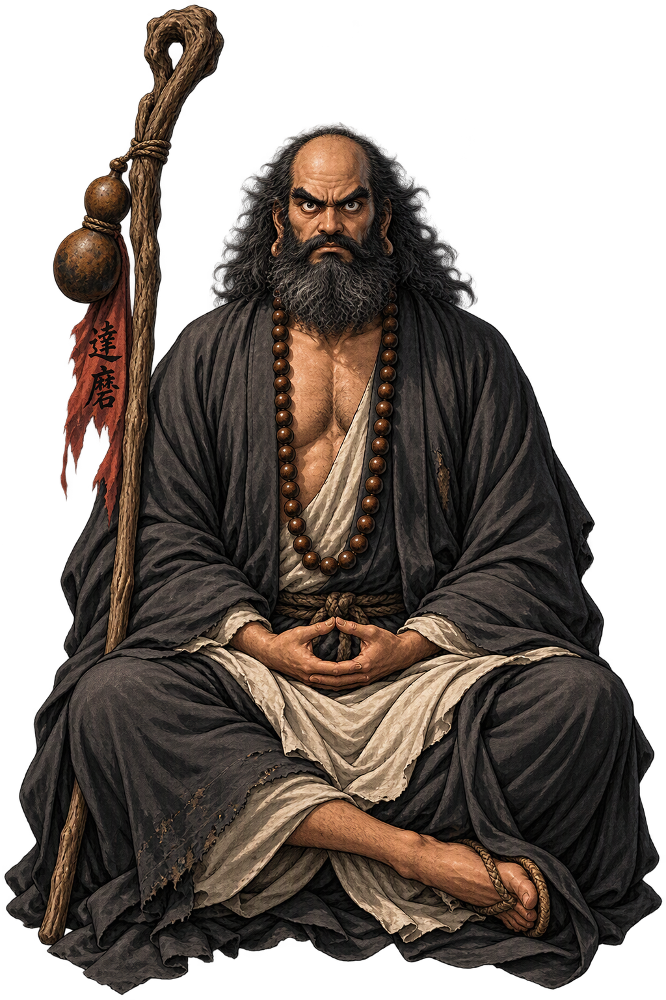
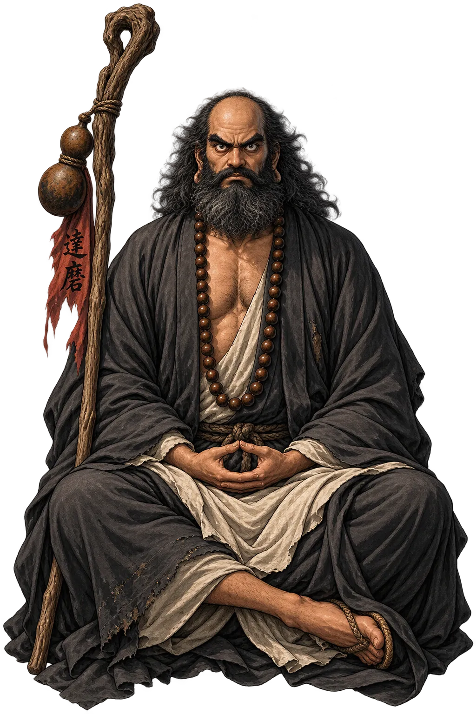

The Cult
Zen’s daily liturgy is his transmission: zazen, the wall-facing sitting, is his nine years made practice. The Daruma-fulfilling rite — the eye-painting — is Japan’s most popular domestic vow.
Extended Lore
Etymology · Orthography · Cult · Iconography · Reception · Sources

Bodhidharma — every fact links to its home
From original script to canonical restoration — the full etymology page →
The name Bodhidharma reaches the modern world through scholarly transliteration of the chinese tradition. Because the conventional spelling uses only Latin letters, its canonical and ASCII forms coincide — the tradition it carries is in the name itself, not in diacritics.
Character-by-character philological analysis
| Character | Unicode | Name | Block | Phonetic Role |
|---|---|---|---|---|
| B | U+0042 | Latin Capital Letter B | Basic Latin | Same, capitalized |
| o | U+006F | Latin Small Letter O | Basic Latin | Same |
| d | U+0064 | Latin Small Letter D | Basic Latin | Same |
| h | U+0068 | Latin Small Letter H | Basic Latin | Same |
| i | U+0069 | Latin Small Letter I | Basic Latin | Same |
| d | U+0064 | Latin Small Letter D | Basic Latin | Same |
| h | U+0068 | Latin Small Letter H | Basic Latin | Same |
| a | U+0061 | Latin Small Letter A | Basic Latin | Same |
| r | U+0072 | Latin Small Letter R | Basic Latin | Same |
| m | U+006D | Latin Small Letter M | Basic Latin | Same |
| a | U+0061 | Latin Small Letter A | Basic Latin | Same |
This restoration reflects fidelity to the attested tradition, not recovered diacritics: every character of Bodhidharma already survives in ASCII. What the restoration preserves is the canonical spelling itself — the form scholarship standardised.
How the sacred was kept — rites, sanctuaries, remains
Zen’s daily liturgy is his transmission: zazen, the wall-facing sitting, is his nine years made practice. The Daruma-fulfilling rite — the eye-painting — is Japan’s most popular domestic vow.
His supposed grave at Kongxiangsi in the Pagoda Forest of Shaolin carries the earliest memorials; the Shaolin steles of the Tang dynasty name him. The Daruma doll’s manufacture is a modern industry, but the blank-eyed scowl descends from the Muromachi portraits.
How Bodhidharma was imaged across the ages
The fierce, bearded, wide-eyed Indian in a robe, sometimes with the eyelids; or the round-bottomed Daruma, red-robed, scowling, one-eyed. His icon is the stare — the gaze that outlasts the wall.
The name after its own age — transmission, translation, survival
History of religion uses him as the case-study of a legend accreting around a historical missionary — the scholarly layers (McRae, Faure) are themselves a literature. The martial-arts world venerates him as its founding master; and the Daruma doll made the fierce patriarch the friend of every Japanese child’s new year.
Bodhidharma is the Silk Road made flesh: Indian dharma, Chinese wall, Japanese doll. The Zen lineages count him as the twenty-eighth Indian and first Chinese patriarch — the hinge of the transmission; and the Tibetan traditions remember him (as Bodhidharmottara) among the great siddhas. His defiance of the Liang emperor became the template of the Zen master’s whole pedagogy.
He stands at the head of every Zen lineage — Rinzai and Sōtō alike trace the wall; the Shaolin temple’s global fame rests on his legend; and the Daruma doll, with its self-righting scowl, is Japan’s most reproduced folk object. ‘Zen’ as the West knows it begins, by the tradition’s own account, with his ‘don’t know’.
What the written record preserves — and what it does not
Written 菩提達磨 in traditional characters, 菩提达摩 simplified — a Chinese phonetic transcription of Sanskrit Bodhidharma: 菩提 renders bodhi 'awakening', and 達磨 renders dharma, the characters chosen as much for their sound as for their sense. This transcription is the name's original Chinese form, and it is in this dress — 達磨 — that Japan received him as Daruma. The earliest secure layer of the Chinese record is the Luòyáng Qiélán Jì (c. 547 CE), a temple gazetteer that mentions him as 'the Brahmin of the Western Regions' near Shàolín; the Chán transmission histories built his patriarchal biography only generations later, and the nine-year wall-gaze later still. No manuscript in his hand survives, nor plausibly could.
What Bodhidharma means — beyond the dictionary
Bodhidharma: the name is a doctrine — awakening-holding, the dharma that holds itself awake. Restored plainly, it spans the journey it names: an Indian word, a Chinese wall, a Japanese doll, and the plain letters any reader can hold. Five syllables, one transmission.
Deep-dives into the cult, attestation, reception, and sources of Bodhidharma
Zen’s daily liturgy is his transmission: zazen, the wall-facing sitting, is his nine years made practice. The full cult record →
The record rests on Transmission of the Lamp (Jingde Record of the Transmission), Blue Cliff Record (Hekiganroku), case 1, Shaolin monastery tradition and the Yi Jin Jing, among 4 cited works. The full source apparatus →
History of religion uses him as the case-study of a legend accreting around a historical missionary — the scholarly layers (McRae, Faure) are themselves a literature. Reception & transformation →
The fierce, bearded, wide-eyed Indian in a robe, sometimes with the eyelids; or the round-bottomed Daruma, red-robed, scowling, one-eyed. The iconography →
Written 菩提達磨 in traditional characters, 菩提达摩 simplified — a Chinese phonetic transcription of Sanskrit Bodhidharma: 菩提 renders bodhi 'awakening', and 達磨 renders dharma, the characters chosen as much for their sound as for their sense. The Original Script note →
The philological foundations of the record
Every claim on this page is grounded in established scholarship. The orthographic restorations follow disciplinary convention. The etymological chain follows the best available reference works. This is not invention — it is resurrection through scholarship.
You have traced the name from its earliest attestation to its canonical restoration. Now return to the myth. The story is where the name lives.
Back to Lore